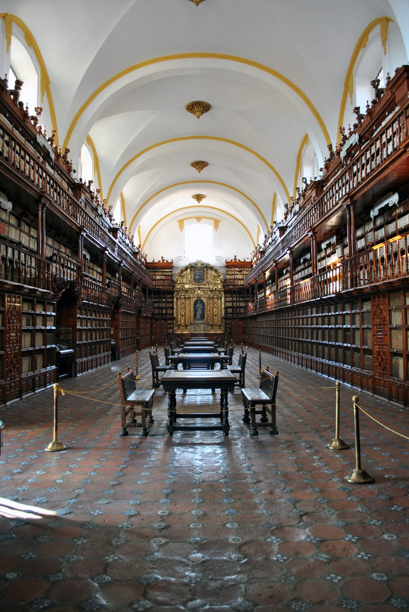
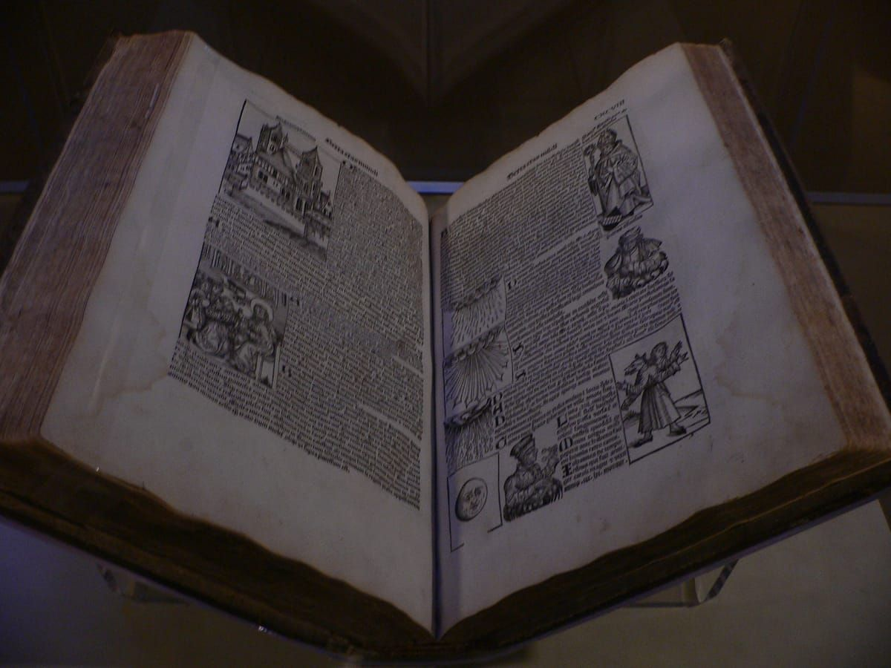
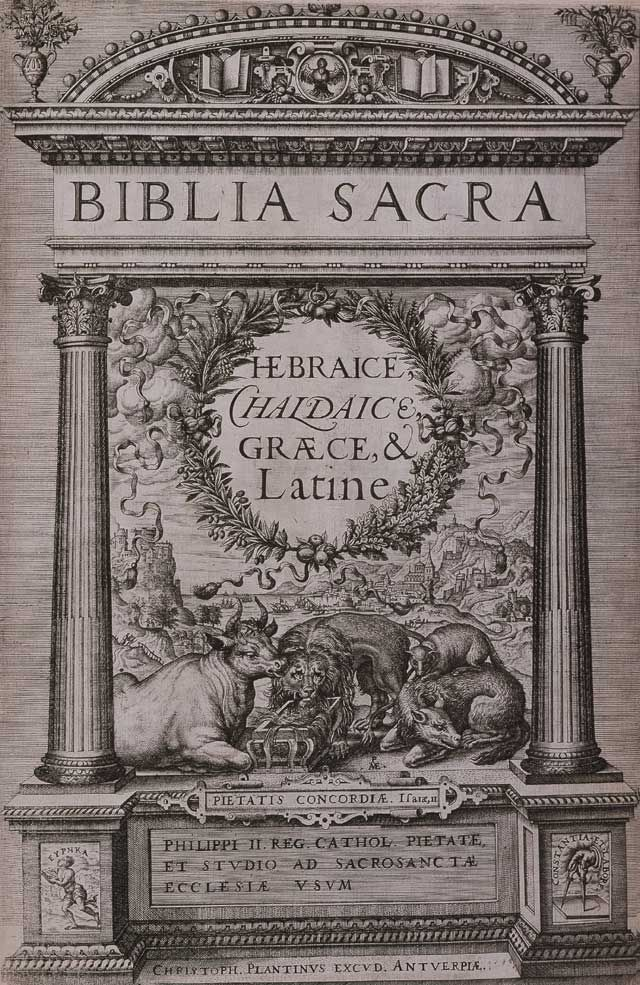
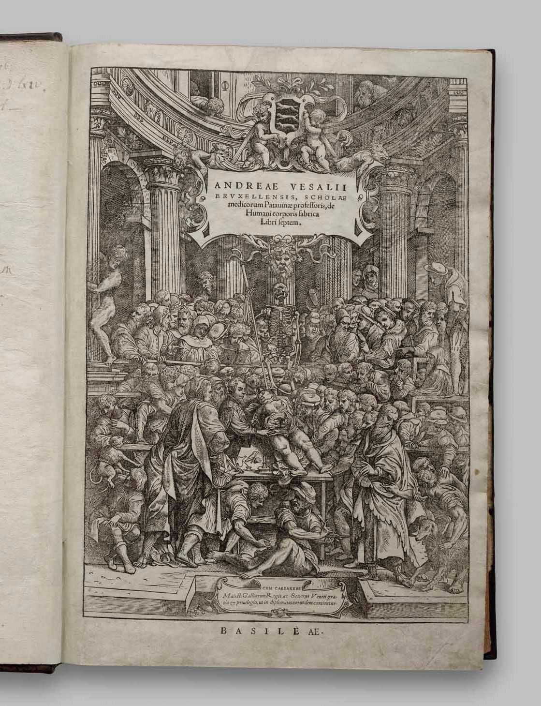
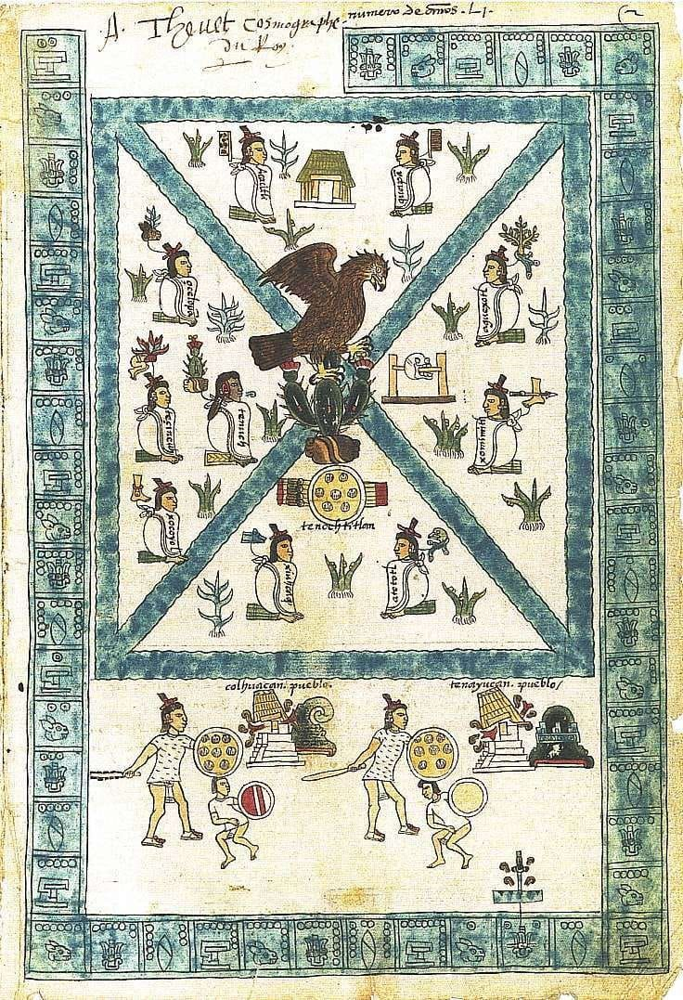
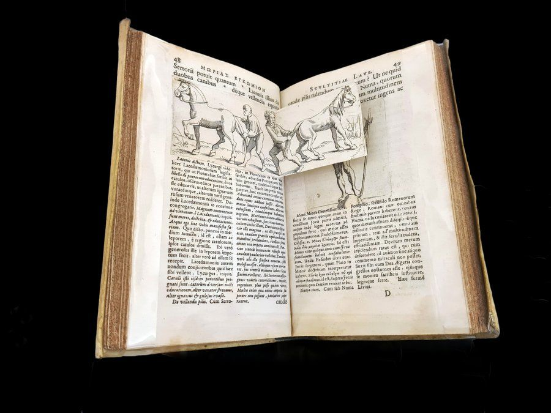
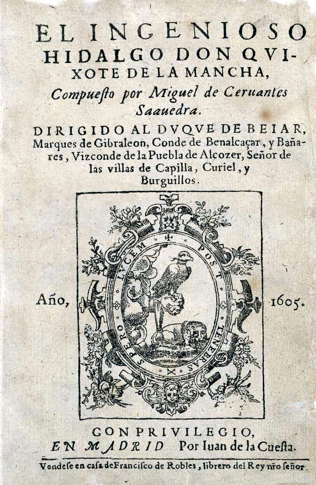

Horarios
De martes a domingo
de 10:00 a 18:00 h
Los lunes está cerrada
La primera biblioteca pública de América
UNESCO · Memoria del Mundo · 2005

De martes a domingo
de 10:00 a 18:00 h
Los lunes está cerrada
5 Oriente Núm. 5, 2º piso
Casa de Cultura, Centro, Puebla
$40 MXN la entrada general
$20 MXN con credencial de estudiante
Los martes la entrada es gratis
Visitas guiadas gratis
Audioguía y exposiciones
También hay una sala de exposiciones temporales
No cuestan nada. Escríbenos y te confirmamos el día.
En 1646, el obispo de Puebla Juan de Palafox y Mendoza regaló sus 5,000 libros al seminario con una condición: que pudiera consultarlos cualquiera que supiera leer. Así empezó la primera biblioteca pública de América.
La sala que se ve hoy es posterior. La mandó construir en 1773 el obispo Francisco Fabián y Fuero: mide 43 metros de largo y tiene tres pisos de estantería de cedro y ayacahuite.
El fondo siguió creciendo y hoy pasa de los 45,000 volúmenes. En 1981 se declaró Monumento Histórico y en 2005 la UNESCO la incluyó en su registro Memoria del Mundo.
Libros impresos, manuscritos e impresos sueltos sobre 54 materias y en 14 idiomas. Entre ellos hay 9 incunables y más de 5,000 manuscritos.






Esto es solo una muestra. El fondo completo va del derecho canónico a la química, y del náhuatl al árabe.
5 Oriente Núm. 5, 2º piso
Casa de Cultura del Estado de Puebla
Colonia Centro · C.P. 72000
(222) 232 3483
(222) 246 4835 ext. 118
De martes a domingo
de 10:00 a 18:00 h